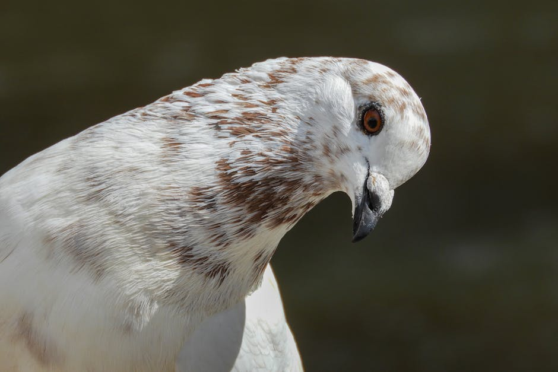
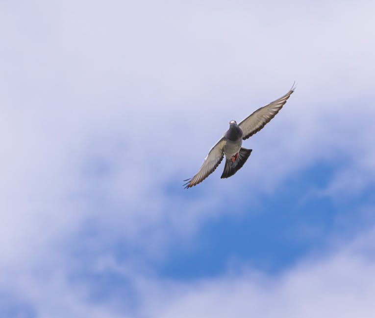
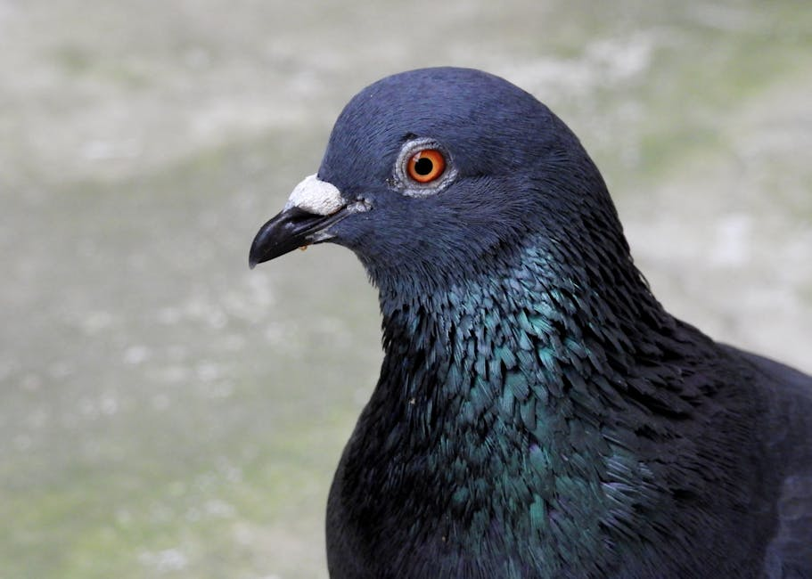
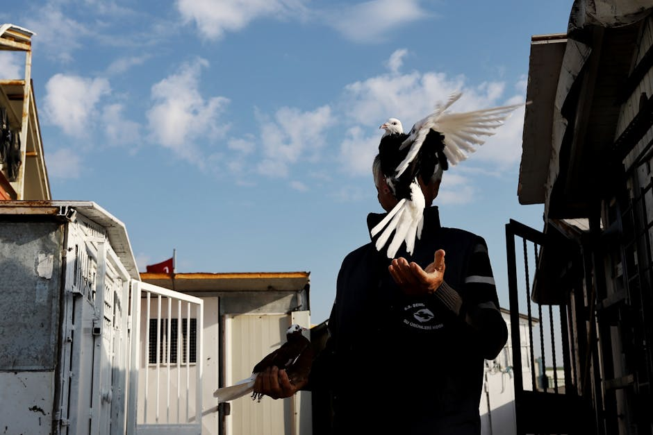
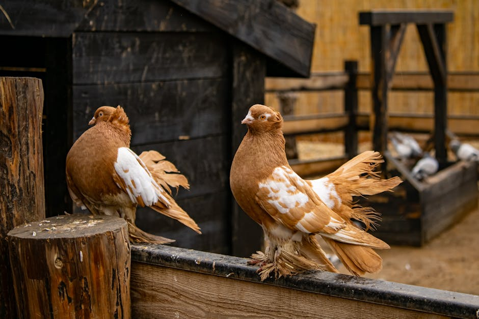
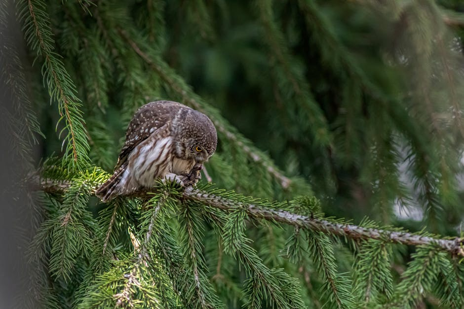
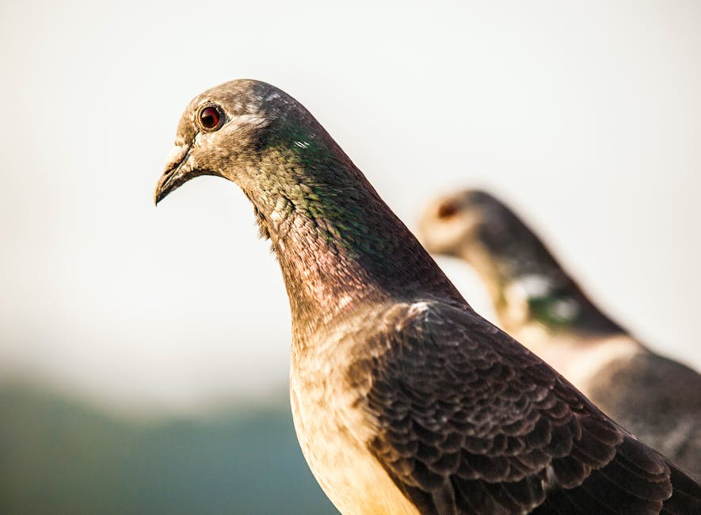

Početna · Kategorije · Golubarstvo
Golubarstvo
Tradicija stara stotinama godina — od visokoletača i prevrtača do gušana i ukrasnih rasa. Srbija ima prepoznate domaće rase poput bačkog prevrtača i niškog visokoletača koje čuvamo u registru.
Tradicija stara stotinama godina — od visokoletača i prevrtača do gušana i ukrasnih rasa. Srbija ima prepoznate domaće rase poput bačkog prevrtača i niškog visokoletača koje čuvamo u registru.

Baza rasa · 12 priznatih

Prevrtač · domaća rasa

Visokoletač · domaća rasa

Prevrtač · domaća rasa

Gušan · ukrasni

Bradavičar · ukrasni

Pauni · ukrasni

Sovice · ukrasni

Prevrtač · regionalna
Saveti
Golubarstvo je hobi koji nagrađuje strpljenje i pažnju. Pre nego što napravite golubarnik, donesite nekoliko ključnih odluka.
Najveća greška početnika je previše golubova u premalom prostoru. Bolje 6 dobrih nego 30 prosečnih.